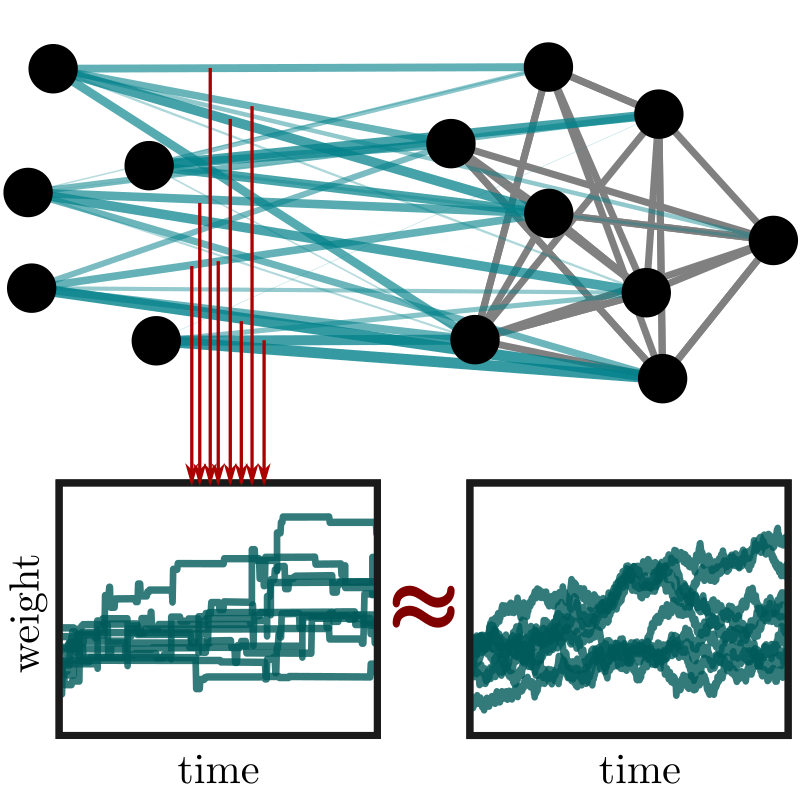
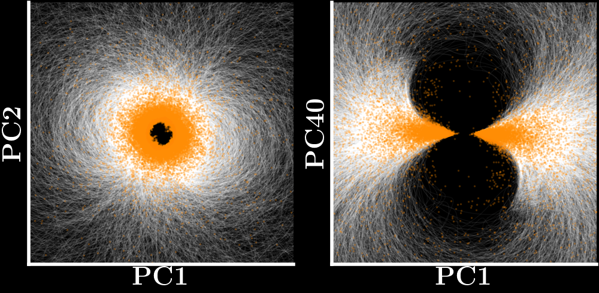
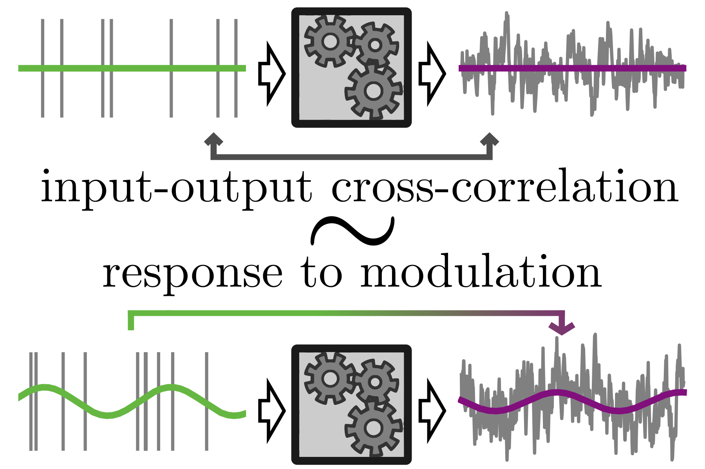

Jakob Stubenrauch
PhD student at BCCN Berlin on statistical physics of complex systems
My research interests are complex systems, noisy systems, neural networks, and computation.
I focus on idealized models of networks, disorder, and noise that are analytically tractable and that I believe contain key principles of cognition and intelligence. To this end I use methods from statistical physics, such as replica theory, large deviation theory, path integrals, or random matrix theory.
Vita
I studied physics at RWTH Aachen and did my bachelor's project with Fabian Hassler (see [5]) and my master's project with Moritz Helias, Alexander van Meegen, Christian Keup, and Anno Kurth (see [3]).
Currently I am a PhD student at the Bernstein Center for Computational Neuroscience Berlin and Humboldt University Berlin with Benjamin Lindner in his group Theory of Complex Systems and Neurophysics. I am funded by the CRC1315 "Mechanisms and disturbances in memory consolidation". In my PhD I focus on memory and response in spiking neural networks [1,2,4], including more general results on point processes and stochastic systems [4].
For publications see the list below or my Google Scholar profile.
Research



Publications
Preprints
-
J. Stubenrauch and C. Keup, Spherical law for optimal layouts of random graphs, preprint, arXiv:2610.40965 (2026).
Peer-reviewed articles
-
J. Stubenrauch, N. Auer, R. Kempter, and B. Lindner, Stochastic synaptic dynamics under learning, PRX Life 4, 023006 (2026).
-
N. Auer, L. Chen, J. Stubenrauch, B. Lindner, and R. Kempter, Population sparseness determines strength of Hebbian plasticity for maximal memory lifetime in associative networks, PLoS Comput. Biol. 22, e1013235 (2026).
-
J. Stubenrauch, C. Keup, A. C. Kurth, M. Helias, and A. van Meegen, Fixed point geometry in chaotic neural networks, Phys. Rev. Research 7, 023203 (2025).
-
J. Stubenrauch and B. Lindner, Furutsu-Novikov–like cross-correlation–response relations for systems driven by shot noise, Phys. Rev. X 14, 041047 (2024).
-
F. Hassler, J. Stubenrauch, and A. Ciani, Equation of motion approach to black-box quantization: Taming the multimode Jaynes-Cummings model, Phys. Rev. B 99, 014515 (2019).